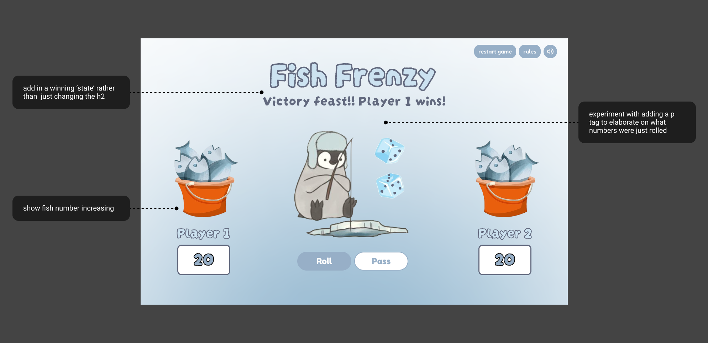
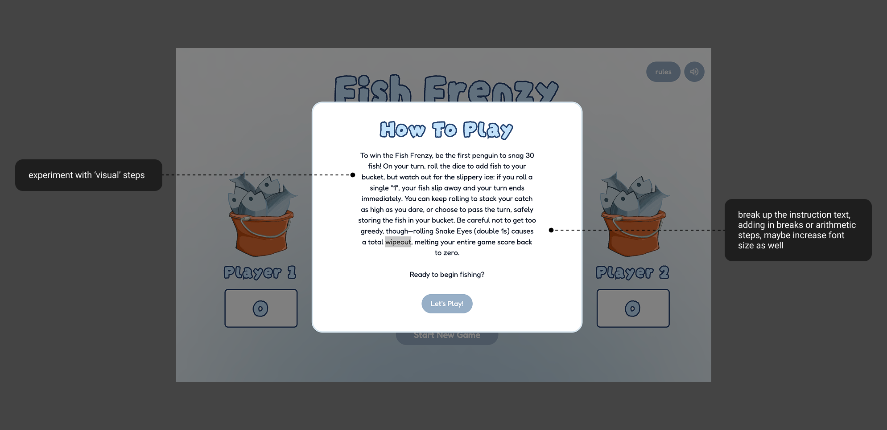

To receive critiques on my visual design for my Game On project, I met with three designers. All of these designers are my current UC Davis peers. Two of them have a background in UI/UX design and graphic design, and the other has more experience with software development. They have all worked on individual projects and on-campus organization products, ranging from internships to classes like Des 112. I found that many of their critiques had a lot in common, but I find that any feedback is helpful throughout the iterative process.
I presented my current working project and received feedback for each of the different stages in my game (the starting state, the game, and the end of the game). An aspect that they liked the most was the consistency and the visual graphics of the game. I got feedback from one of the UI/UX designers that the font choice was selected well, and the visual hierarchy and padding were a good standard. They appreciated the ‘cute’ branding, along with enjoying the penguin-related puns. Regarding more critical feedback, it was generally regarding the same visual issues. During the rules explanation (starting state), two of them reported that there was too much text, which resulted in some cognitive overload. They suggested opting for fewer words and/or breaking the instructions up into steps. To make this more legible and digestible, I could shorten the rules or break them up into visual steps (numbers). Another critique I got was that it was difficult to understand what number the dice landed on, suggesting that I should include more text indicating what number was last rolled. I also got a suggestion from two designers to add a win state or an overlay showing which player won at the end. Thus creating a visual distinction between when the users are playing and when the game is finished.

